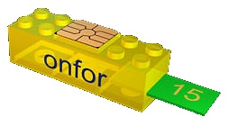
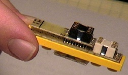
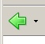

Legos
click here to go to www.lego.com
color page
Tim McNerney shoes peapol how computers wrok by useing programming bricks.
This is a picksher of the blue print.
I am tacking about the picksher balo.
Dogs page
|  |
 |
| Blue print |
Photograf |
Tim McNerney calls these Programming Bricks.
You will need to use the "Back" arrow to get from Tim's page back to this page. The arrow looks like this:

and is in the upper left part of your browser.
Main Page